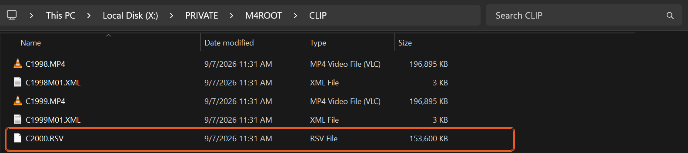

בקצרה
- מה קרה: המצלמה הספיקה לשמור את התמונה והסאונד, אבל לא את ה“מפה” הקטנה שאומרת לנגן איפה יושב כל פריים (כל תמונה בודדת בסרטון). בלי המפה הקובץ לא נפתח, אבל הצילומים בפנים.
- מה לא לעשות עכשיו: אל תפרמטו את הכרטיס (פרמוט מוחק הכול), אל תמשיכו לצלם עליו, ואל תריצו תוכנות תיקון על הקובץ המקורי.
- מה כן: העתיקו את הקובץ למחשב, קחו קליפ תקין מאותה מצלמה, ובנו לו מפה חדשה בעזרת תוכנה חינמית. ארבעה צעדים, והם מופיעים למטה.
- לא רוצים להתעסק עם זה? שלחו לי את הקובץ. הבדיקה בחינם, ואם לא הצלחתי לשחזר, הכסף חוזר. איך שולחים.
מה עושים, צעד אחר צעד
- העתיקו הכול למחשב. את קובץ ה-RSV, ובאותה הזדמנות גם קליפ תקין מאותו כרטיס (קובץ MP4 שנפתח כרגיל). מהרגע הזה עבדו רק על העותקים שבמחשב. הכרטיס נשאר בצד.
- הכינו “קליפ לדוגמה”. זו הקלטה תקינה מאותה מצלמה, באותן הגדרות בדיוק שבהן צולם הקובץ הפגום: אותה רזולוציה (למשל 4K), אותו מספר פריימים לשנייה (25, 50 או 100), אותה איכות הקלטה. הכי פשוט: קליפ שצילמתם באותו יום, לפני או אחרי הקובץ שנפגע, בלי לשנות הגדרות באמצע. הקליפ שהעתקתם מהכרטיס בדרך כלל מתאים. אם אין כזה, הכניסו כרטיס למצלמה, סגרו את מכסה העדשה, והקליטו 30 שניות.
- הריצו תוכנה חינמית בשם untrunc. היא לוקחת את המפה מהקליפ התקין, ובונה לפיה מפה חדשה לקובץ הפגום. הורידו כאן (לווינדוס. תוכנה רגילה עם כפתורים, בלי להקליד פקודות). בעמוד שנפתח הורידו את הקובץ untrunc_x64.zip, חלצו אותו, והפעילו את untrunc-gui.exe (לא את untrunc.exe, זו הגרסה בלי החלון). פתחו את ההגדרות של התוכנה (Settings) וסמנו את האפשרות של קבצי RSV. בחרו את הקליפ לדוגמה, בחרו את קובץ ה-RSV, והריצו. אם הקובץ שיצא לא נפתח, הריצו עוד פעם, זה קורה. איך יודעים שזה עבד: נוצר קובץ MP4 חדש, והוא נפתח בנגן.
- בדקו את הקובץ כולו, לא רק את ההתחלה. האורך צריך להתאים למה שצילמתם. גללו לחמש-שש נקודות לאורך הסרטון, בעיקר לקראת הסוף. בכל נקודה עצרו, הריצו כמה שניות, ובדקו שהתמונה זזה חלק ושהשפתיים תואמות לדיבור. אם התמונה קופצת או הסאונד זז: הקליפ לדוגמה לא תואם מספיק. חפשו קליפ שתואם יותר והריצו שוב. אל תחליפו תוכנה.
למה זה קרה
בזמן ההקלטה המצלמה כותבת את התמונה והסאונד לכרטיס כל הזמן. דבר אחד היא שומרת לרגע שבו לוחצים על סטופ: מפה קטנה שאומרת לנגן איפה מתחיל ואיפה נגמר כל פריים. אם המצלמה נכבתה לפני כן, נשארו כל הצילומים בלי המפה, והמצלמה השאירה את הקובץ עם שם זמני שנגמר ב-RSV במקום ב-MP4.
בגלל זה לשנות את הסיומת ל-MP4 לא עוזר: הסיומת משתנה, המפה עדיין חסרה.
בפעם הבאה שתדליקו את המצלמה עם הכרטיס הזה, אולי תופיע ההודעה “Image Database File error. Recover?”. אפשר לאשר: זה מסדר את הרישום הפנימי של המצלמה, ולפי מדריך סוני לא מוחק כלום. אבל זה לא יתקן את ההקלטה עצמה.
מתי זה לא יעזור
- אם הקובץ הגיע אליכם בהעברה (WeTransfer, דרייב, הורדה) ולא ישירות מהכרטיס: קודם בדקו שהגודל שלו זהה למקור. העברה שנתקעה משאירה קובץ שנראה בסדר אבל ריק מבפנים, ואת זה אף תוכנה לא מתקנת. בקשו את הקובץ שוב.
- אם המשכתם לצלם על הכרטיס אחרי שזה קרה: החלקים שנדרסו לא חוזרים. מה שלא נדרס, עדיין אפשר להציל.
שאלות נפוצות
- אפשר פשוט לשנות את הסיומת מ-RSV ל-MP4? לרוב זה לא עוזר. הסיומת משתנה, אבל המפה עדיין חסרה.
- צריך ידע טכני כדי לעשות את זה? ברוב המקרים לא. התוכנה נראית כמו כל תוכנה אחרת: פותחים אותה, בוחרים שני קבצים, ולוחצים על כפתור. לא צריך להקליד שום דבר. החלק שדורש תשומת לב הוא הבדיקה בסוף.
- כמה זמן זה לוקח? תלוי בגודל הקובץ: כמה דקות לקובץ קצר, ויותר לקובץ של שעה ומעלה. התוכנה עובדת לבד, אפשר להשאיר אותה רצה ולחזור אליה אחר כך.
אם נתקעתם
הקובץ גדול? גם הריצה השנייה יצאה מקרטעת? או שפשוט אין לכם זמן להתעסק עם זה? שלחו לי קישור לקובץ ולקליפ תקין מאותה מצלמה. קודם כול אני בודק אם החומר בכלל נמצא בקובץ, ואומר לכם בדיוק מה המצב. הבדיקה הזאת בחינם. אם יש מה לשחזר ותרצו להמשיך, אתם מקבלים מחיר לפי הקובץ. משלמים, ואז העבודה מתחילה. ואם לא הצלחתי לשחזר, הכסף חוזר, כולו או חלקו, לפי התוצאה.
מעדיפים מייל? avihaiteram@gmail.com
מי אני
אביחי תרם, צלם ועורך וידאו. אני מצלם על Sony FX3 ועובד עם קבצי מצלמה כאלה כל יום, אז אני יודע איך מצלמה כותבת אותם ומה נשבר כשהיא נכבית באמצע, וכבר החזרתי לחיים קבצים כאלה מסוני ומ-DJI. שלחו לי קובץ שלא נפתח: הבדיקה הראשונה תמיד בחינם, ואם לא הצלחתי לשחזר, הכסף חוזר. אפשר למצוא אותי גם באינסטגרם: @avihai.teram.